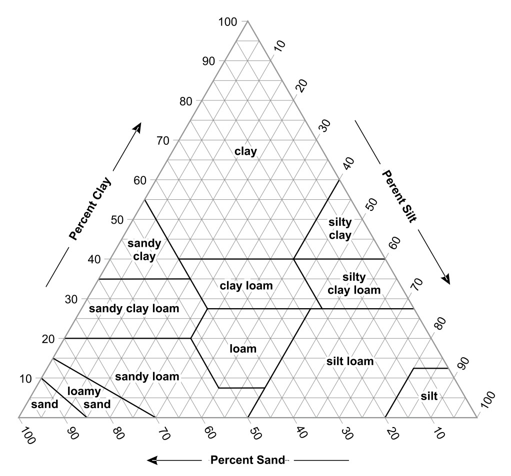

Soil Science
Soil Analysis
Practice using the soil texture triangle and the pH scale.
Using the Soil Texture Triangle
The soil texture triangle plots the percentages of sand, silt, and clay in a soil sample to determine its texture class. Given any two of the three percentages, the third can be found by subtracting from 100%, and the texture class can be read from where those values intersect on the triangle.

Using the pH Scale
The pH scale runs from 0 to 14, with plants often preferring a pH between 6.0 - 6.5.